A GPU-resident, fully implicit three-phase black-oil simulator whose linear solver combines FP64 flexible GMRES with a reduced-precision constrained-pressure-residual preconditioner, benchmarked against OPM Flow on the Norne field, SPE10 model 2 and models of up to five million cells.
NVRS-CUDA is a three-phase black-oil simulator with dissolved gas and vaporised oil in which property evaluation, analytic Jacobian assembly, algebraic multigrid and the well equations all run on the device. Each Newton step is solved with flexible GMRES and a two-stage constrained-pressure-residual (CPR) preconditioner: stage 1 is one AmgX algebraic-multigrid V-cycle on the pressure block, stage 2 is 2 x 2 block Jacobi. The state, residuals and Krylov recurrences stay in double precision; the preconditioner runs in lower precision. BoomerAMG from HYPRE and Ginkgo can replace AmgX in stage 1.
The host reads the deck and writes results; inside a Newton iteration nothing returns to the host.
Stage 1: one AmgX V-cycle on the pressure block in FP32. Stage 2: 2 x 2 block Jacobi. Outer FGMRES in FP64 keeps the answer exact.
A block-sparse operator cuts the cost per Krylov iteration; graph replay is used only where it pays for itself.
Norne, SPE10 model 2 and synthetic models of up to five million cells, well by well and field by field.
Two-stage CPR: one AmgX V-cycle approximates the inverse of the pressure block A_p, then 2 x 2 block Jacobi (M_2) acts on the full system.
Flexible GMRES minimises the true residual over whatever directions the preconditioner produced, so rounding inside the preconditioner changes the iteration count, not the solution.
The condition that licenses an FP32 preconditioner: FP32 unit roundoff times the conditioning of the preconditioned operator.
This is the simulator in miniature, running in your browser. A fully implicit two-phase model has pressure and water saturation in every cell, so the Jacobian has 2 x 2 blocks. Every time step is a Newton loop, and every Newton step solves J δu = −R with FGMRES in FP64, preconditioned by two-stage CPR. Stage 1 applies quasi-IMPES weights to form the pressure matrix and one aggregation-multigrid V-cycle (the role AmgX plays). Stage 2 is 2 x 2 block Jacobi. Choose the precision of the preconditioner and watch the iteration counts, the time per stage and the solution.
Two-phase oil and water, Corey relative permeability, slightly compressible rock. In the five-spot, water is injected at a fixed rate in the centre and four producers at fixed bottom-hole pressure sit in the corners, with a Peaceman-type well index proportional to the well-cell permeability. Every run is repeated with an FP64 preconditioner as the reference (red); the curves of the chosen precision (blue) lie on it. The model has no gas phase, so there is no WGPR. Newton, the update limits and the time-step control use the same settings as the simulator in the paper: OPM Flow's convergence test (CNV below 1e-2 and material balance below 1e-6 in every phase), at most 20 Newton iterations, saturation changes limited to 0.2 per iteration, FGMRES(30) to a relative 1e-6, and dyadic chopping of each report step (up to six halvings, one released after two clean report steps). FP16 is emulated by rounding every operation of the preconditioner, applied to the row-scaled pressure matrix. This app runs in your browser, in JavaScript on the CPU, with no GPU and no server: a two-phase model far smaller than the three-phase GPU simulator, but with the same stages in its nonlinear and linear solvers. Larger grids take a few seconds per report step.
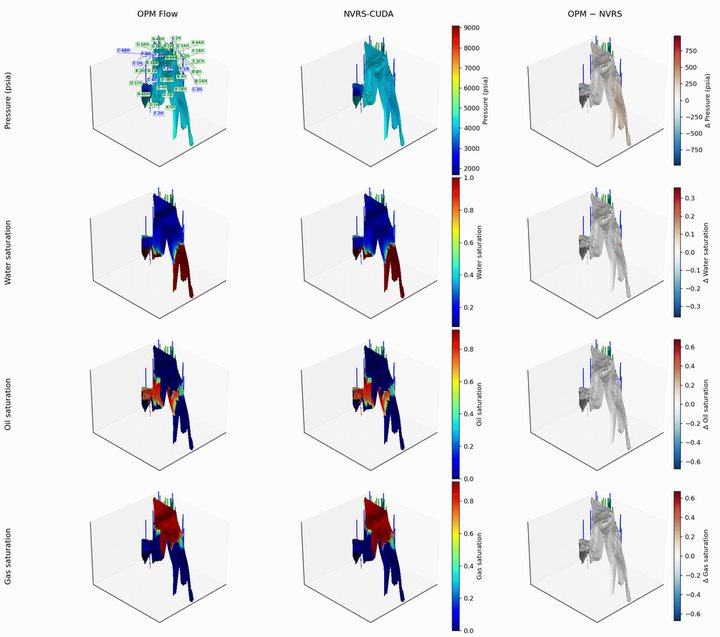
movieclick to enlarge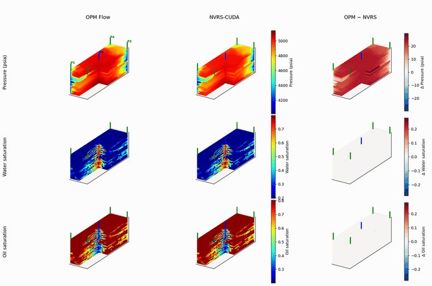
movieclick to enlarge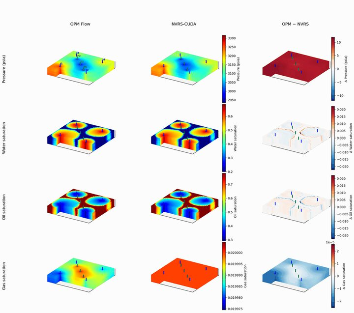
movieclick to enlargeWall clock in seconds on one GPU, from the paper. Flow is OPM Flow 2024.10 (its GPU linear solver on one rank for Norne and Bench3P, its CPU solver with two threads for SPE10 on the VR72 host). NVRS-CUDA runs every model on one GPU with BoomerAMG or AmgX in CPR stage 1.
| Model | Cells | GB200 | VR72 | ||||
|---|---|---|---|---|---|---|---|
| OPM Flow | BoomerAMG | AmgX | OPM Flow | BoomerAMG | AmgX | ||
| Norne field | 44,431 | 488.51 | 71.51 | 44.95 | 243.88 | 73.54 | 35.73 |
| Bench3P | 4,800 | 9.25 | 3.00 | 0.89 | 5.32 | 3.44 | 0.95 |
| SPE10 model 2 | 1,122,000 | n/r | 99.22 | 53.06 | 766.16 | 91.74 | 41.21 |
| Million 1M | 1,000,000 | n/r | 26.23 | 21.17 | n/r | 19.94 | 14.87 |
| Million 2M | 2,000,000 | n/r | 49.94 | 39.38 | n/r | 38.23 | 27.17 |
| Million 4M | 4,000,000 | n/r | 81.87 | 77.67 | n/r | 60.97 | 52.33 |
| Million 5M | 5,000,000 | n/r | 102.32 | 95.61 | n/r | 76.65 | 63.77 |
n/r: not run. On Norne the fastest OPM Flow configuration on the GB200 node, its CPU CPR solver on 16 ranks, takes 165.62 s against 46.75 s for NVRS-CUDA (median of three), a factor of 3.5. On SPE10, NVRS-CUDA on one VR72 GPU is 18.6 times faster than OPM Flow's CPU solver on two threads.
Strong scaling of synthetic three-phase models from one to five million cells. Switch machines, or show the speed-up of each back end against its own one-GPU time; hover a bar for its value.
| Cells | Stage 1 | GB200 | VR72 | ||||||
|---|---|---|---|---|---|---|---|---|---|
| 1 GPU | 2 GPUs | 4 GPUs | 1 to 4 | 1 GPU | 2 GPUs | 4 GPUs | 1 to 4 | ||
| 1 M | BoomerAMG | 26.23 | 33.85 | 43.27 | 0.61x | 19.94 | 28.88 | 49.61 | 0.40x |
| AmgX | 21.17 | 18.96 | 18.26 | 1.16x | 14.87 | 14.02 | 16.17 | 0.92x | |
| 2 M | BoomerAMG | 49.94 | 52.84 | 65.32 | 0.76x | 38.23 | 43.83 | 72.11 | 0.53x |
| AmgX | 39.38 | 31.05 | 30.84 | 1.28x | 27.17 | 21.24 | 23.62 | 1.16x | |
| 4 M | BoomerAMG | 81.87 | 80.00 | 86.67 | 0.94x | 60.97 | 60.96 | 85.21 | 0.72x |
| AmgX | 77.67 | 58.01 | 51.78 | 1.50x | 52.33 | 36.58 | 41.14 | 1.27x | |
| 5 M | BoomerAMG | 102.32 | 96.16 | 96.64 | 1.06x | 76.65 | 77.49 | 93.30 | 0.81x |
| AmgX | 95.61 | 71.14 | 61.71 | 1.55x | 63.77 | 43.91 | 42.26 | 1.51x | |
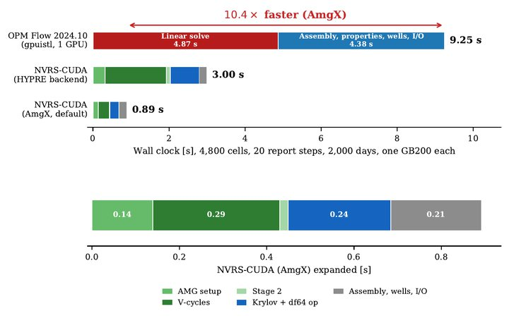
click to zoom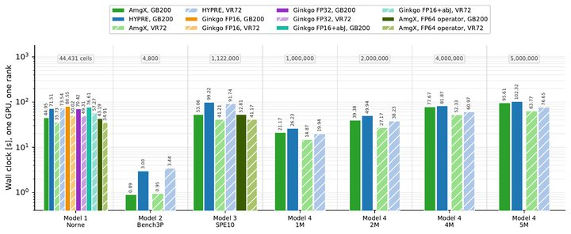
click to zoom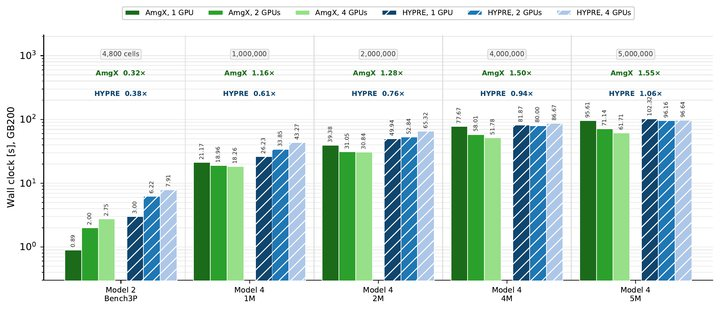
click to zoom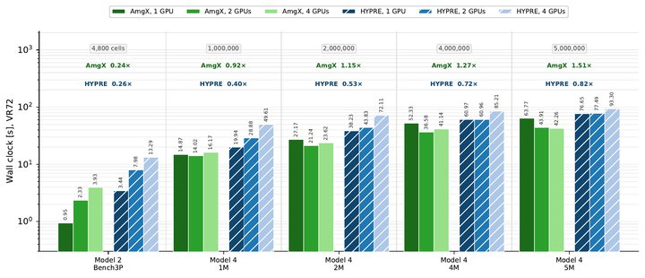
click to zoom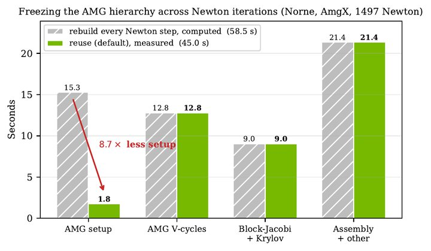
click to zoom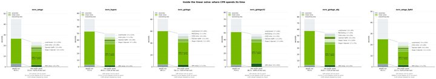
click to zoom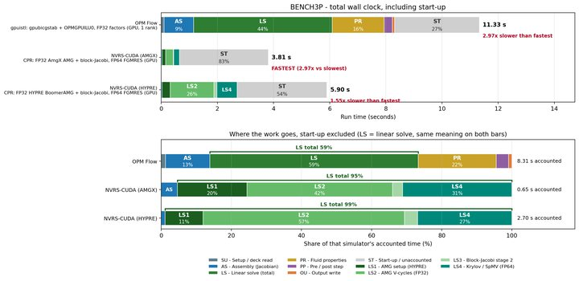
click to zoom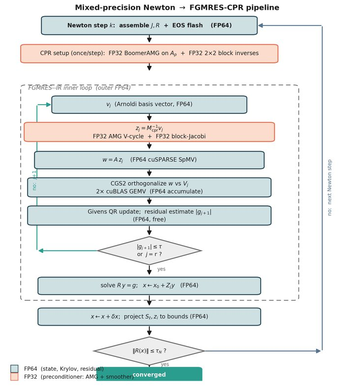
click to zoom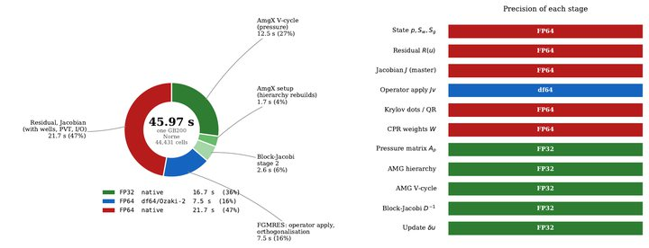
click to zoom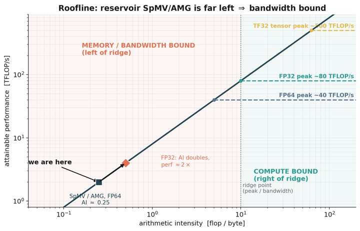
click to zoom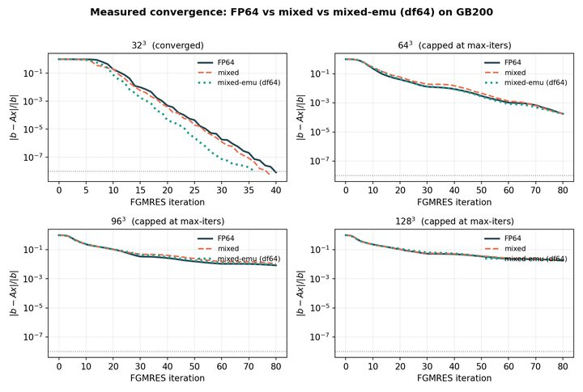
click to zoom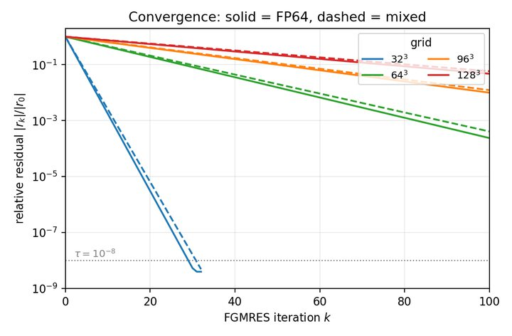
click to zoom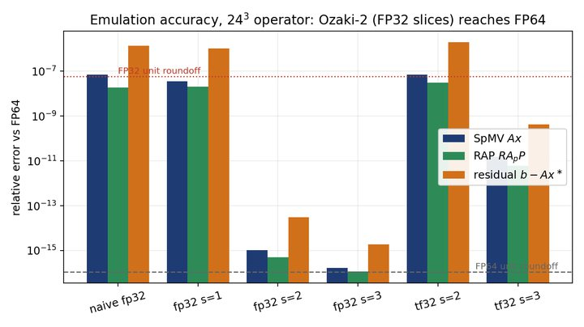
click to zoom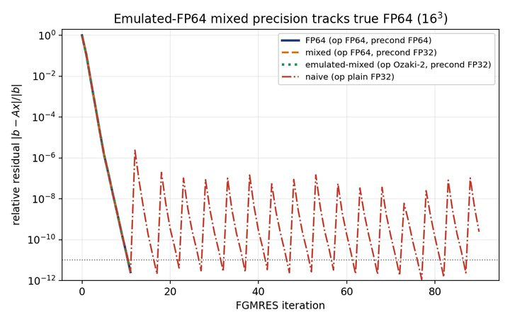
click to zoom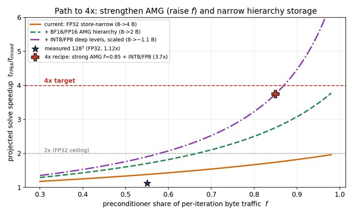
click to zoom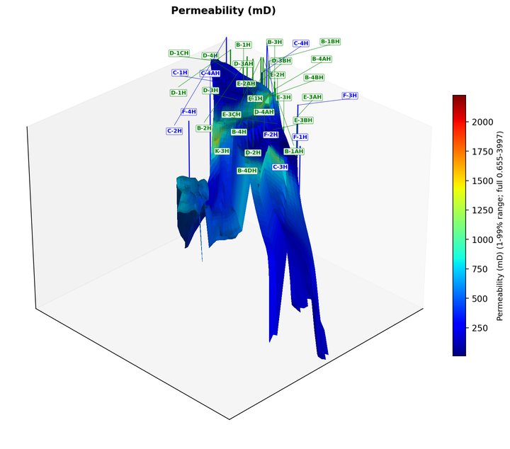
click to zoom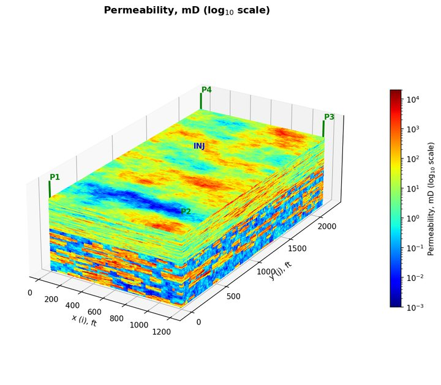
click to zoom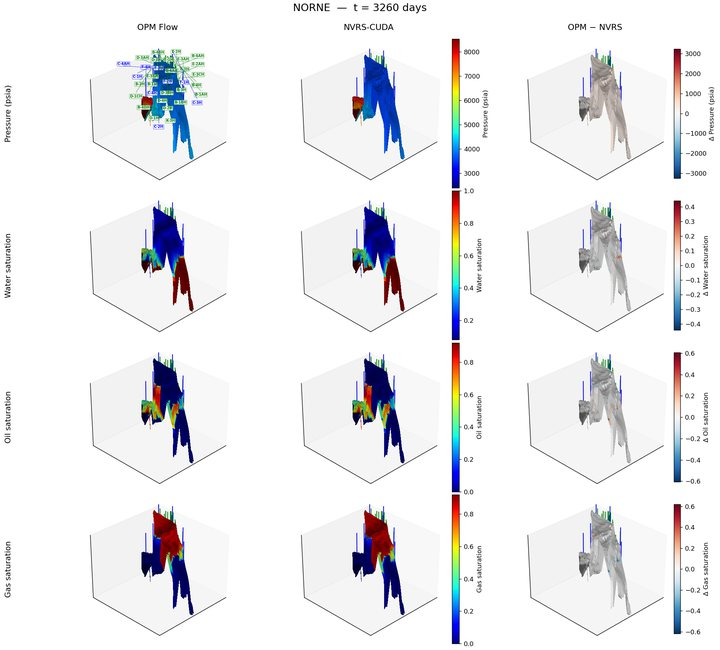
click to zoom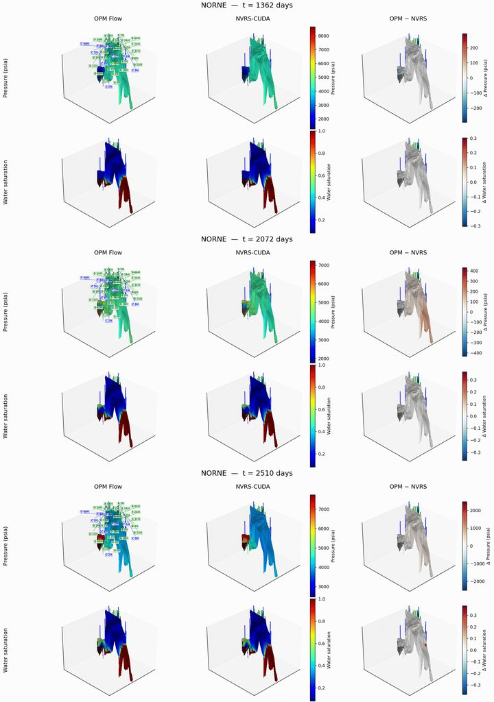
click to zoom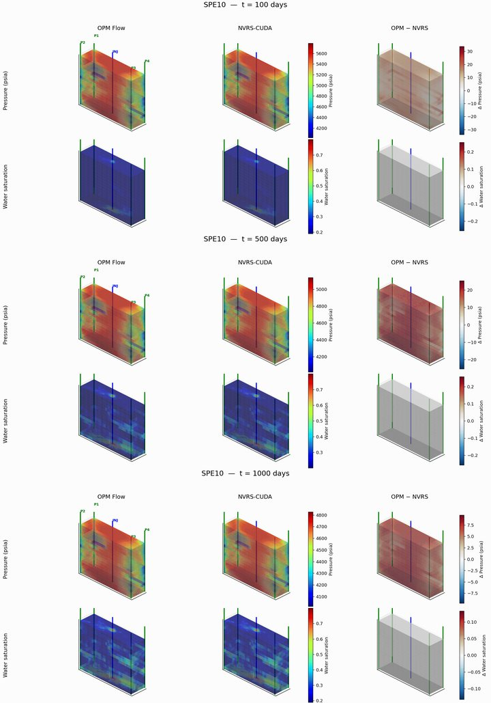
click to zoom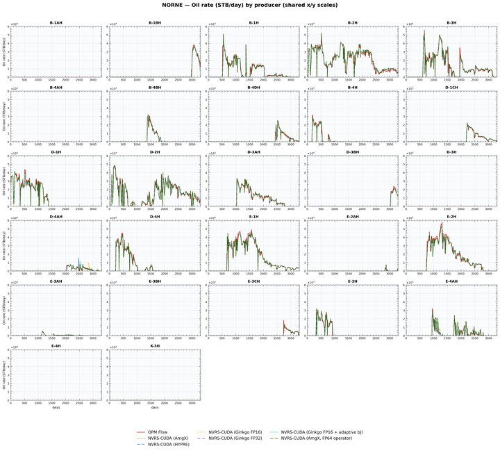
click to zoom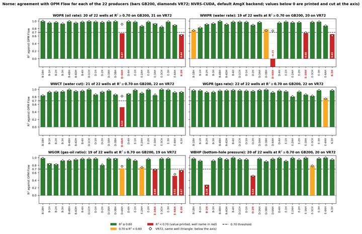
click to zoomThe argument of the paper, run live. A heterogeneous pressure equation, the system that CPR's first stage solves, is handed to flexible GMRES, preconditioned by one aggregation-multigrid V-cycle, the role AmgX plays in stage 1 of CPR. With the outer FGMRES in FP64, running the V-cycle in FP32 or even FP16 changes how many iterations are needed, not the accuracy reached. When the outer recurrences drop to FP32 as well, the residual stalls near FP32 roundoff. Every curve is the true residual, evaluated in FP64.
5-point finite volumes, harmonic transmissibilities, an injector and a producer; 2 x 2 aggregates with Galerkin coarse operators, two damped-Jacobi sweeps before and after, exact coarsest solve. FP16 is emulated by rounding every operation; the FP16 hierarchy uses the diagonally scaled matrix, because field-unit entries exceed the largest half-precision number.